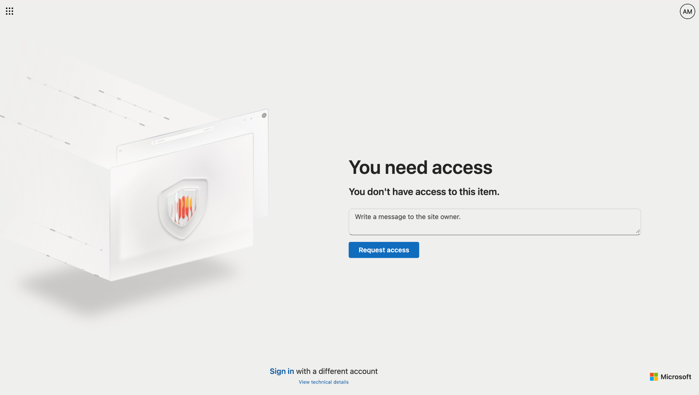
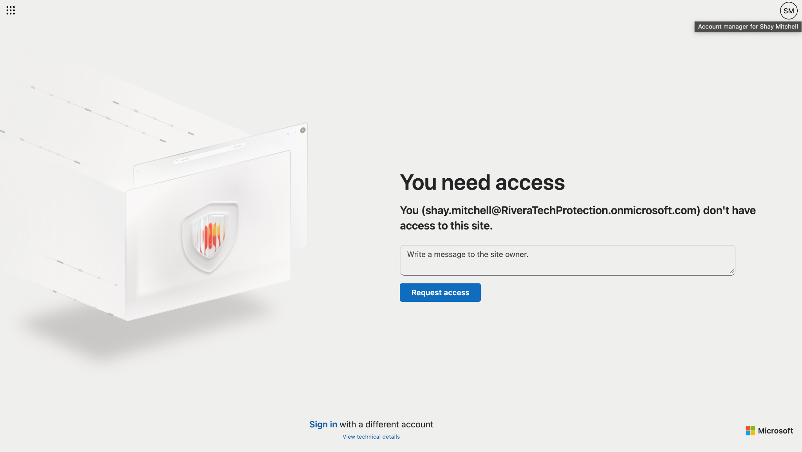
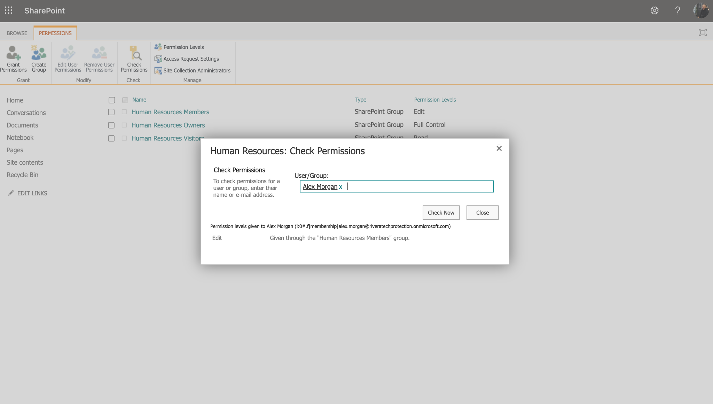
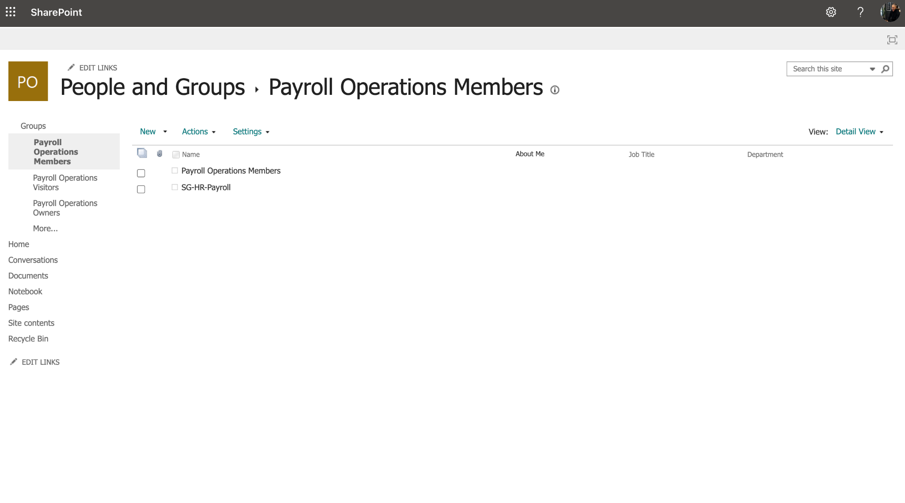
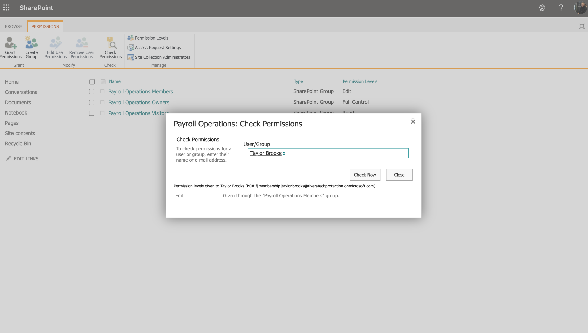
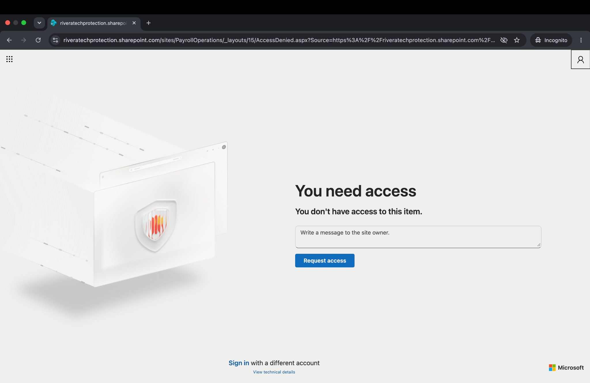

The security challenge
Employees need enough access to complete approved work without automatically inheriting access to unrelated or sensitive resources. A transfer between departments must also remove permissions that are no longer justified.
The solution
I provisioned standard-user identities in a Microsoft 365 training tenant, configured Entra security groups and mapped them to SharePoint permissions. I then simulated a Finance-to-HR transfer and verified the access change. Finally, I isolated Payroll behind its own security group and private SharePoint site.
Observed outcomes: Finance Read access, HR Edit access, Payroll specialist Edit access, and access-denied results for unauthorized users.
Evidence gallery






Technologies and principles
Key takeaway
Identity group membership must be tied to resource-level permissions and validated from the user's perspective. This is a simulated training environment with fictional data, not a production security audit. See the repository README for detailed test scope and limitations.